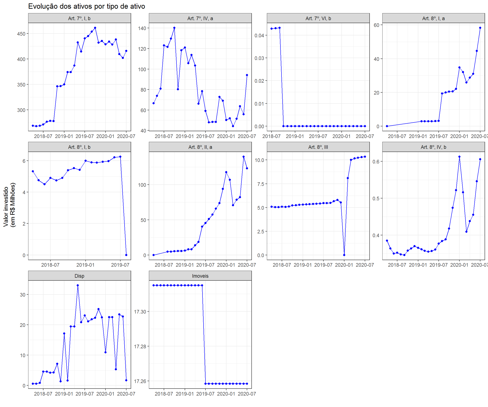
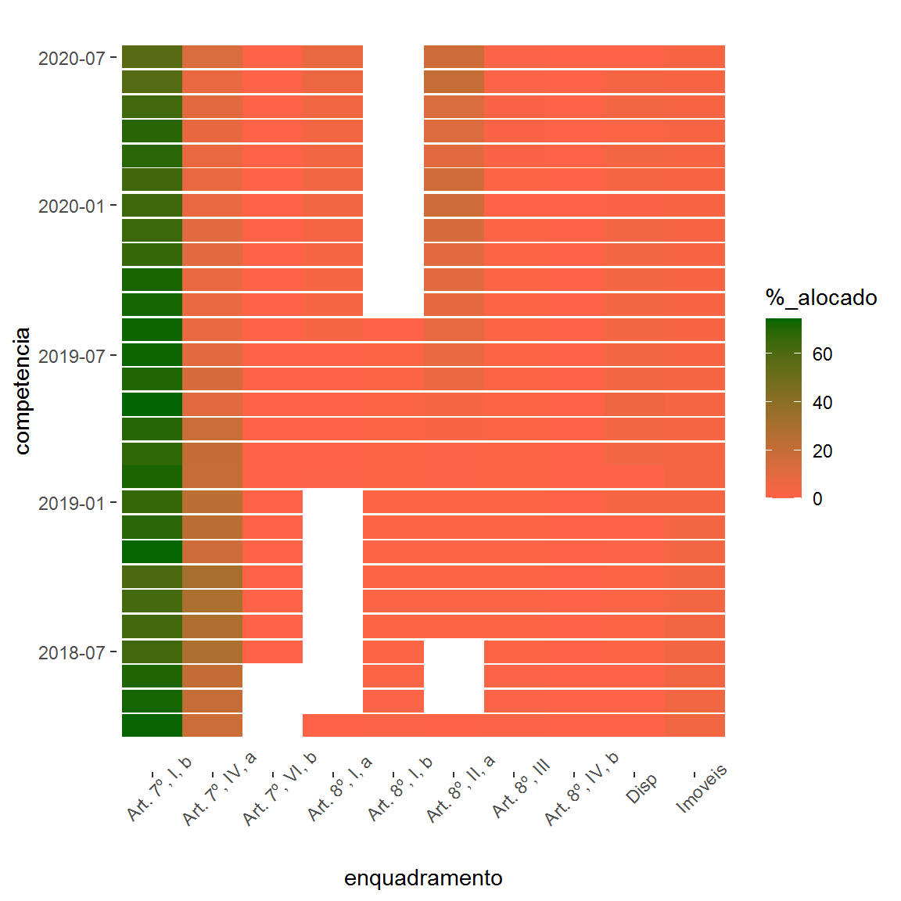
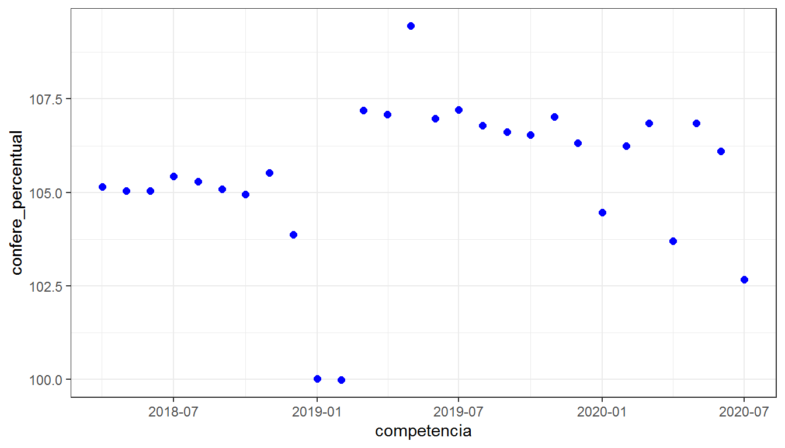
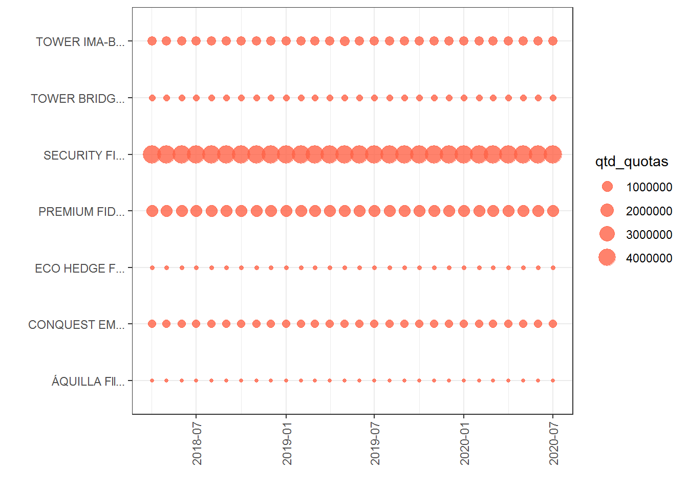

Capítulo 4 DAIR - Demonstrativo das Aplicações e Investimento de Recursos
Este capítulo é dedicado à análise dos dados do DAIR, demonstrativo pelo qual o RPPS informa à SPREV mensalmente a posição dos investimentos bem como dos demais ativos vinculados ao sistema previdenciário.
Os investimentos dos RPPS são regulados pela Resolução CMN no 3922/10, que “dispõe sobre as aplicações dos recursos dos regimes próprios de previdência social instituídos pela União, Estados, Distrito Federal e Municípios”.
Algumas das análises apresentadas neste capítulo fazem uso de conjuntos de dados “complementares” também disponibilizados pela SPREV. São eles:
- Fundos Vedados com Aplicações dos RPPS
- Planilha de Enquadramento dos Fundos CGACI RPPS
- Tabela Novos Limites Resolução no 4695/2018
- Instituições Financeiras que Atendem ao Previsto no Art. 15
Informações adicionais sobre o DAIR podem ser obtidas aqui
4.1 Importação e Pré-Processamento dos Dados
Antes que qualquer análise possa ser feita os dados devem ser importados e processados para que fiquem em condições de serem analisados.
A importação pode ser feita da seguinte forma:
# Importação dos dados
dair <- read_delim("dados/1-Carteira_2013a2020__Atualizacao_de_ago_set_2020_Extração_Em2020-10-29 17-00-51.csv",
delim = ",",
locale = locale(encoding = "latin1",
decimal_mark = ",",
grouping_mark = ""))
# Alterar os nomes das colunas
names(dair) <- c("cnpj", "uf", "ente", "competencia", "segmento",
"tipo_ativo", "limite_resol_cmn", "ident_ativo",
"nm_ativo", "qtd_quotas", "vlr_atual_ativo", "vlr_total_atual",
"perc_recursos_rpps", "pl_fundo", "perc_pl_fundo")Feita a importação dos dados recomenda-se inspecionar seu conteúdo com vistas a verificar se o processo de importação deu-se sem erros. Essa inspeção visual também ajuda a verificar características dos dados que possam demandar ajustes posteriores.
options(scipen=999)
dair %>%
head() %>%
kbl(format.args = list(decimal.mark = ",", big.mark = "."),
caption = "Registros iniciais da base de dados do DAIR") %>%
kable_paper(full_width = FALSE) %>%
scroll_box(width = "700px", height = "300px")| cnpj | uf | ente | competencia | segmento | tipo_ativo | limite_resol_cmn | ident_ativo | nm_ativo | qtd_quotas | vlr_atual_ativo | vlr_total_atual | perc_recursos_rpps | pl_fundo | perc_pl_fundo |
|---|---|---|---|---|---|---|---|---|---|---|---|---|---|---|
| 63606479000124 | AC | Governo do Estado do Acre | 012017 | Disponibilidades Financeiras | NA | NA | 2358 / 6178-6 | 1 Banco do Brasil S.A. | 1,000 | 5.158,310000 | 5.158,31 | 0,04 | NA | NA |
| 63606479000124 | AC | Governo do Estado do Acre | 012017 | Disponibilidades Financeiras | NA | NA | 3550 / 5738-X | 1 Banco do Brasil S.A. | 1,000 | 9.750.427,360000 | 9.750.427,36 | 69,21 | NA | NA |
| 63606479000124 | AC | Governo do Estado do Acre | 012017 | Disponibilidades Financeiras | NA | NA | 3550 / 6080-1 | 1 Banco do Brasil S.A. | 1,000 | 0,000000 | 0,00 | 0,00 | NA | NA |
| 63606479000124 | AC | Governo do Estado do Acre | 012017 | Renda Fixa | FI de Renda Fixa | 30 | 13077418/0001-49 | BB PREVIDENCIÁRIO RENDA FIXA PERFIL FIC DE FI | 4.405,394 | 1,836013 | 8.088,36 | 0,06 | 5.358.441.716 | 0 |
| 63606479000124 | AC | Governo do Estado do Acre | 012017 | Disponibilidades Financeiras | NA | NA | 3550 / 8307-0 | 1 Banco do Brasil S.A. | 1,000 | 9.255,080000 | 9.255,08 | 0,07 | NA | NA |
| 63606479000124 | AC | Governo do Estado do Acre | 012017 | Disponibilidades Financeiras | NA | NA | 3550 / 8361-5 | 1 Banco do Brasil S.A. | 1,000 | 4.633,520000 | 4.633,52 | 0,03 | NA | NA |
A base de dados do DAIR possui 15 colunas com informações sobre os investimentos dos RPPS. Apresenta-se a seguir, um quadro contendo o “dicionário” para essa base de dados.
| Variável | Descrição |
|---|---|
| cnpj | CNPJ do Ente |
| uf | Sigla da unidade da federação em que o Ente se localiza |
| ente | Nome do Ente instituidor do RPPS |
| competencia | Mes e ano a que os dados apresentados se referem. Formato MMYYYY |
| segmento | Segmento ao qual pertence o ativo |
| tipo_ativo | Detalhamento do segmento informando o tipo específico de ativo no qual fez-se o investimento |
| limite_resolucao_cmn | Percentual indicativo do limite máximo de recursos que o RPPS pode aplicar no ativo conforme disposto na Resolução CMN no 3922/10 |
| ident_ativo | Código de identificação do ativo |
| nm_ativo | Nome do ativo |
| qtd_quotas | Quantidade de cotas do ativo que o RPPS possui |
| vlr_atual_ativo | Valor da unidade de ativo que o RPPS possui |
| vlr_total_atual | Valor total do ativo |
| perc_recursos_rpps | Percentual dos recursos do RPPS aplicados no ativo |
| pl_fundo | Patrimônio líquido do fundo de investimento |
| perc_pl_fundo | Percentual do patrimônio líquido do fundo de investimentos que o valor investido pelo RPPS representa |
Antes de seguir para as análises, será ainda necessário realizar alguns procedimentos de “limpeza” na base de dados.
dair <- dair %>%
mutate(ident_ativo = trimws(ident_ativo),
tipo_ativo = if_else(segmento == "Disponibilidades Financeiras", "Disp", tipo_ativo),
ident_ativo = str_replace_all(ident_ativo, "[[:punct:]]", ""))Agora os dados estão prontos para a análise.
4.2 Análise Exploratória Preliminar
Antes de iniciar qualquer análise é muito importante adquirir um conhecimento geral da base de dados. Um procedimento que pode ser interessante é explorar individualmente cada variável.
Uma primeira questão pode ser: qual o período compreendido por esta base de dados? A resposta a essa pergunta pode ser obtida com o seguinte código:
[1] "012017" "012018" "012019" "012020" "022017" "022018" "022019" "022020"
[9] "032017" "032018" "032019" "032020" "042017" "042018" "042019" "042020"
[17] "052017" "052018" "052019" "052020" "062017" "062018" "062019" "062020"
[25] "072017" "072018" "072019" "072020" "082017" "082018" "082019" "082020"
[33] "092017" "092018" "092019" "092020" "1/2013" "1/2014" "1/2015" "1/2016"
[41] "1/2017" "102017" "102018" "102019" "112017" "112018" "112019" "122017"
[49] "122018" "122019" "2/2013" "2/2014" "2/2015" "2/2016" "3/2013" "3/2014"
[57] "3/2015" "3/2016" "4/2013" "4/2014" "4/2015" "4/2016" "5/2013" "5/2014"
[65] "5/2015" "5/2016" "6/2013" "6/2014" "6/2015" "6/2016"O resultado mostra duas coisas: que o período compreendido vai de Jan/2013 a Set/2020 e que os valores são informados em dois formatos: MMYYYY e M/YYYY.
Em razão de alterações ocorridas na legislação as análises neste capítulo fazem uso de um subconjunto desses dados, mais especificamente com as competências posteriores a Abril de 2018, mês a partir do qual passaram a vigorar a última alteração ocorrida na Resolução 3922/10.
O código a seguir filtra os dados para obter apenas os registros no período de tempo de interesse:
dair <- dair %>%
mutate(competencia = parse_date_time(competencia, orders = c("%m%Y", "%m/%Y"))) %>%
filter(competencia >= dmy("01042018"))Uma rápida conferida para ver se de fato o período de tempo está correto.
[1] "2018-04-01 UTC" "2020-09-01 UTC"Parece estar tudo ok.
Explorar os possíveis valores que uma variável pode assumir ajuda na compreensão da base de dados. Por exemplo, quais são os possíveis segmentos em que um ativo pode ser classificado?
# A tibble: 7 x 1
segmento
<chr>
1 Disponibilidades Financeiras
2 Renda Fixa
3 Renda Vari?vel e Investimentos Estruturados
4 Investimentos no Exterior
5 Demais Bens, Direitos e Ativos
6 Imóveis
7 Aplicações Vedadas em Resolução CMN Tem-se 7 possibilidades. Ou melhor, no subconjunto da base de dados em análise, a variável segmento assume sete valores possíveis.
À primeira vista, o valor Aplicações Vedadas em Resolução CMN pode parecer estranho. Se é vedada a aplicação, não deveria nem ser uma opção prevista pelo CADPREV. Mas o fato é que ao longo dos anos muitos RPPS fizeram investimentos em ativos inapropriados ou que vieram posteriormente a ser considerados inapropriados.
Algo que deve também ser objeto de atenção ao se avaliar a carteira de um RPPS diz respeito à liquidez dos investimentos feitos pelos mesmos.
Para reduzir o deficit atuarial os Entes podem aportar a seus RPPS ativos com muito pouca liquidez, em geral imóveis, e por valores às vezes muito superiores ao que efetivamente valem.
E quais são os tipos de ativos que compõem a carteira dos RPPS?
dair %>%
distinct(tipo_ativo) %>%
kbl(caption = "Relação de ativos que compõem a carteira dos RPPS") %>%
kable_paper(full_width = FALSE)| tipo_ativo |
|---|
| Disp |
| FI 100% títulos TN - Art. 7º, I, b |
| FI Renda Fixa - Geral - Art. 7º, IV, a |
| FI Multimercado - Aberto - Art. 8º, III |
| FI de Ações - Índices c/ no mínimo 50 ações - Art. 8º, I, a |
| FI Imobiliários - Art. 8º, IV, b |
| FI Renda Fixa “Crédito Privado” - Art. 7º, VII, b |
| FI de Ações - Geral - Art. 8º, II, a |
| FI Renda Fixa “Referenciado” - Art. 7º, III, a |
| Fundo de Ações BDR Nível 1 - Art. 9º-A, III |
| ETF - Índice de Ações (c/ no mínimo 50) - Art. 8º, I, b |
| Poupança - Art. 7º, VI, b |
| CDB - Certificado de Depósito Bancário - Art. 7º, VI, a |
| Títulos de Renda Fixa |
| Valores Mobiliários |
| ETF - Demais Indicadores de RF - Art. 7º, IV, b |
| Títulos Públicos de emissão do TN - Art. 7º , I, a |
| Outros Bens, Direitos e Ativos |
| ETF - Renda Fixa “Referenciado” - Art. 7º, III, b |
| Fundo Investimento - Sufixo Investimento no Exterior - Art. 9-Aº, II |
| Prédio Comercial |
| FI em Direitos Creditórios - Cota Sênior - Art. 7º, VII, a |
| FI em Participações - Art. 8º, IV, a |
| FI Debêntures de Infraestrutura - Art. 7º, VII, c |
| Operações compromissadas - Art. 7º , II |
| Outros - Imóveis |
| Apartamento |
| Terreno |
| Casa |
| Loja |
| ETF - Demais Índices de Ações - Art. 8º, II, b |
| Prédio Residencial |
| Fundos de Investimento não previstos em Resolução CMN |
| ETF - 100% Títulos Públicos - Art. 7º, I, c |
| FI em Ações |
| FI Multimercado - Aberto |
| FI 100% títulos TN |
| FI de Renda Fixa |
| Fundo de Renda Fixa - Dívida Externa - Art. 9º-A, I |
| FI Ações - Mercado de Acesso - Art. 8º, IV, c |
São quarenta tipos de ativos. Deve-se notar que ao lado do nome da maioria deles há um dispositivo legal. Por exemplo, o ativo FI 100% títulos TN está associado ao dispositivo Art. 7º, I, b que indica o “enquadramento” do ativo, ou seja, indica a classificação do mesmo segundo a Resolução 3922/10.
Transcreve-se, a seguir, o citado dispositivo:
"Art. 7º No segmento de renda fixa, as aplicações dos recursos dos regimes próprios de previdência social subordinam-se aos seguintes limites:
I - até 100% (cem por cento) em:
(…)
- cotas de fundos de investimento classificados como renda fixa, conforme regulamentação estabelecida pela Comissão de Valores Mobiliários (CVM), constituídos sob a forma de condomínio aberto, que apliquem seus recursos exclusivamente em títulos definidos na alínea “a”, ou compromissadas lastreadas nesses títulos, e cuja política de investimento assuma o compromisso de buscar o retorno de índice de renda fixa não atrelado à taxa de juros de um dia, cuja carteira teórica seja composta exclusivamente por títulos públicos (fundos de renda fixa);
(…)"
Pelo enquadramento (Art. 7º, I, b) é possível saber que se trata de um ativo de renda fixa, no qual o RPPS pode aplicar até 100% de seus recursos (ativo de baixo risco) e, mais especificamente, que o ativo em questão são cotas de fundo de investimento com as características descritas na alínea ‘b’.
Pode-se também estar interessado em saber quais tipos de ativos estão vinculados a cada segmento.
dair %>%
distinct(segmento, tipo_ativo) %>%
arrange(segmento) %>%
kbl(caption = "Tipos de ativos e correspondentes segmentos") %>%
kable_paper(full_width = FALSE)| segmento | tipo_ativo |
|---|---|
| Aplicações Vedadas em Resolução CMN | Valores Mobiliários |
| Aplicações Vedadas em Resolução CMN | Títulos de Renda Fixa |
| Aplicações Vedadas em Resolução CMN | Outros Bens, Direitos e Ativos |
| Aplicações Vedadas em Resolução CMN | Fundos de Investimento não previstos em Resolução CMN |
| Demais Bens, Direitos e Ativos | Títulos de Renda Fixa |
| Demais Bens, Direitos e Ativos | Valores Mobiliários |
| Demais Bens, Direitos e Ativos | Outros Bens, Direitos e Ativos |
| Disponibilidades Financeiras | Disp |
| Imóveis | Prédio Comercial |
| Imóveis | Outros - Imóveis |
| Imóveis | Apartamento |
| Imóveis | Terreno |
| Imóveis | Casa |
| Imóveis | Loja |
| Imóveis | Prédio Residencial |
| Investimentos no Exterior | Fundo de Ações BDR Nível 1 - Art. 9º-A, III |
| Investimentos no Exterior | Fundo Investimento - Sufixo Investimento no Exterior - Art. 9-Aº, II |
| Investimentos no Exterior | Fundo de Renda Fixa - Dívida Externa - Art. 9º-A, I |
| Renda Fixa | FI 100% títulos TN - Art. 7º, I, b |
| Renda Fixa | FI Renda Fixa - Geral - Art. 7º, IV, a |
| Renda Fixa | FI Renda Fixa “Crédito Privado” - Art. 7º, VII, b |
| Renda Fixa | FI Renda Fixa “Referenciado” - Art. 7º, III, a |
| Renda Fixa | Poupança - Art. 7º, VI, b |
| Renda Fixa | CDB - Certificado de Depósito Bancário - Art. 7º, VI, a |
| Renda Fixa | ETF - Demais Indicadores de RF - Art. 7º, IV, b |
| Renda Fixa | Títulos Públicos de emissão do TN - Art. 7º , I, a |
| Renda Fixa | ETF - Renda Fixa “Referenciado” - Art. 7º, III, b |
| Renda Fixa | FI em Direitos Creditórios - Cota Sênior - Art. 7º, VII, a |
| Renda Fixa | FI Debêntures de Infraestrutura - Art. 7º, VII, c |
| Renda Fixa | Operações compromissadas - Art. 7º , II |
| Renda Fixa | ETF - 100% Títulos Públicos - Art. 7º, I, c |
| Renda Fixa | FI 100% títulos TN |
| Renda Fixa | FI de Renda Fixa |
| Renda Vari?vel e Investimentos Estruturados | FI Multimercado - Aberto - Art. 8º, III |
| Renda Vari?vel e Investimentos Estruturados | FI de Ações - Índices c/ no mínimo 50 ações - Art. 8º, I, a |
| Renda Vari?vel e Investimentos Estruturados | FI Imobiliários - Art. 8º, IV, b |
| Renda Vari?vel e Investimentos Estruturados | FI de Ações - Geral - Art. 8º, II, a |
| Renda Vari?vel e Investimentos Estruturados | ETF - Índice de Ações (c/ no mínimo 50) - Art. 8º, I, b |
| Renda Vari?vel e Investimentos Estruturados | FI em Participações - Art. 8º, IV, a |
| Renda Vari?vel e Investimentos Estruturados | ETF - Demais Índices de Ações - Art. 8º, II, b |
| Renda Vari?vel e Investimentos Estruturados | FI em Ações |
| Renda Vari?vel e Investimentos Estruturados | FI Multimercado - Aberto |
| Renda Vari?vel e Investimentos Estruturados | FI Ações - Mercado de Acesso - Art. 8º, IV, c |
Inspecionando com atenção o quadro acima, percebe-se que alguns ativos não possuem dispositivo indicando seu enquadramento. De fato, nem todos tem enquadramento na Resolução 3922/10.
Em análises posteriores será útil ter uma variável na base de dados que indique o “enquadramento” de todos os ativos na carteira do RPPS. Assim, cria-se na base de dados uma nova variável chamada enquadramento, derivada da variável tipo_ativo, contendo apenas o nome do dispositivo legal do enquadramento do ativo.
O código a seguir cria a referida variável com seus valores iniciais oriundos da variável tipo_ativo:
Quais os valores da nova variável?
dair %>%
distinct(enquadramento) %>%
arrange(enquadramento) %>%
kbl(caption = "Enquadramento dos Ativos Conforme Res. CMN 3922/10") %>%
kable_paper(full_width = FALSE)| enquadramento |
|---|
| Art. 7º , I, a |
| Art. 7º , II |
| Art. 7º, I, b |
| Art. 7º, I, c |
| Art. 7º, III, a |
| Art. 7º, III, b |
| Art. 7º, IV, a |
| Art. 7º, IV, b |
| Art. 7º, VI, a |
| Art. 7º, VI, b |
| Art. 7º, VII, a |
| Art. 7º, VII, b |
| Art. 7º, VII, c |
| Art. 8º, I, a |
| Art. 8º, I, b |
| Art. 8º, II, a |
| Art. 8º, II, b |
| Art. 8º, III |
| Art. 8º, IV, a |
| Art. 8º, IV, b |
| Art. 8º, IV, c |
| Art. 9-Aº, II |
| Art. 9º-A, I |
| Art. 9º-A, III |
| NA |
Pode-se verificar uma pequena “falha” de formatação de um dos dispositivos (Art. 9-Aº, II em vez de Art. 9º-A, II) mas não há duplicidade. Todos os ativos que, na variável tipo_ativo não possuem o enquadramento tem valor NA nessa nova variável.
Em análises posteriores será útil que todas as variáveis tenham um enquadramento, de forma que far-se-á a seguir um “enquadramento ad hoc” dos ativos com valores NA nessa nova variável.
Para a classificação dos ativos será adotada a seguinte estratégia:
- Os ativos vinculados ao segmento
Imóveis, quais sejam:Prédio Comercial,Outros - Imóveis,Apartamento,Terreno,Casa,LojaePrédio Residencialserão enquadrados comoImoveis;
- As disponibilidades financeiras serão enquadradas como
Disp;
- Os ativos do segmento
Aplicações Vedadas em Resolução CMN, quais sejam:Valores Mobiliários,Títulos de Renda Fixa,Outros Bens, Direitos e AtivoseFundos de Investimento não previstos em Resolução CMNserão enquadrados comoVedados;
- Os ativos do segmento
Demais Bens, Direitos e Ativos, quais sejam:Títulos de Renda Fixa,Valores MobiliárioseOutros Bens, Direitos e Ativosserão enquadrados comoOutros;
- Os ativos do segmento renda fixa
FI 100% títulos TNeFI de Renda Fixaserão enquadrados comoArt. 7º, I, beArt. 7º, IV, b, respectivamente; e
- Os ativos do segmento renda variável
FI em AçõeseFI Multimercado - Abertoserão enquadrados comoArt. 8º, II, aeArt. 8º, III, respectivamente.
Deve-se observar que, pelo critério adotado, os ativos Títulos de Renda Fixa e Outros Bens, Direitos e Ativos poderão ser enquadrados como Vedados ou Outros dependendo do segmento a que pertençam.
O código a seguir faz essas classificações:
dair <- dair %>%
mutate(enquadramento = case_when(segmento == "Disponibilidades Financeiras" ~ "Disp",
segmento == "Imóveis" ~ "Imoveis",
segmento == "Aplicações Vedadas em Resolução CMN" ~ "Vedado",
segmento == "Demais Bens, Direitos e Ativos" ~ "Outros",
tipo_ativo == "FI 100% títulos TN" ~ "Art. 7º, I, b",
tipo_ativo == "FI de Renda Fixa" ~ "Art. 7º, IV, b",
tipo_ativo == "FI em Ações" ~ "Art. 8º, II, a",
tipo_ativo == "FI Multimercado - Aberto" ~ "Art. 8º, III",
TRUE ~ enquadramento))Com essas modificações espera-se que a variável enquadramento não possua mais valores faltantes. Os valores da variável agora são:
dair %>%
distinct(enquadramento) %>%
arrange(enquadramento) %>%
kbl(caption = "Enquadramento dos ativos da base de dados") %>%
kable_paper(full_width = FALSE)| enquadramento |
|---|
| Art. 7º , I, a |
| Art. 7º , II |
| Art. 7º, I, b |
| Art. 7º, I, c |
| Art. 7º, III, a |
| Art. 7º, III, b |
| Art. 7º, IV, a |
| Art. 7º, IV, b |
| Art. 7º, VI, a |
| Art. 7º, VI, b |
| Art. 7º, VII, a |
| Art. 7º, VII, b |
| Art. 7º, VII, c |
| Art. 8º, I, a |
| Art. 8º, I, b |
| Art. 8º, II, a |
| Art. 8º, II, b |
| Art. 8º, III |
| Art. 8º, IV, a |
| Art. 8º, IV, b |
| Art. 8º, IV, c |
| Art. 9-Aº, II |
| Art. 9º-A, I |
| Art. 9º-A, III |
| Disp |
| Imoveis |
| Outros |
| Vedado |
Agora todos os ativos estão devidamente “enquadrados”. Deve-se notar que boa parte dos ativos nos quais os RPPS investem seus recursos são Fundos de Investimentos e será útil separar dessa base de dados os registros que se refiram apenas a esse tipo de ativo. Isso será feito mais adiante.
Com relação às variáveis quantitativas existentes na base, pode-se ter interesse em várias questões.
Por exemplo, qual o limite de aplicação associado a cada tipo de ativo? A Resolução 3922/10 informa esses percentuais, mas pode-se avaliar o que as variáveis limite_resol_cmn e enquadramento informam a respeito.
dair %>%
distinct(enquadramento, limite_resol_cmn) %>%
arrange(desc(limite_resol_cmn)) %>%
kbl(caption = "Limites máximos para investimento - Ativos regulados pela Resolução 3922/10") %>%
kable_paper(full_width = FALSE)| limite_resol_cmn | enquadramento |
|---|---|
| 100.00 | Art. 7º, I, b |
| 100.00 | Art. 7º , I, a |
| 100.00 | Art. 7º, I, c |
| 99.99 | Art. 7º, I, b |
| 60.00 | Art. 7º, III, a |
| 60.00 | Art. 7º, III, b |
| 40.00 | Art. 7º, IV, a |
| 40.00 | Art. 7º, IV, b |
| 30.00 | Art. 8º, I, a |
| 30.00 | Art. 8º, I, b |
| 30.00 | Art. 7º, IV, b |
| 20.00 | Art. 8º, II, a |
| 20.00 | Art. 8º, II, b |
| 15.00 | Art. 7º, VI, b |
| 15.00 | Art. 7º, VI, a |
| 15.00 | Art. 8º, II, a |
| 10.00 | Art. 8º, III |
| 10.00 | Art. 9º-A, III |
| 10.00 | Art. 9-Aº, II |
| 10.00 | Art. 9º-A, I |
| 5.00 | Art. 8º, IV, b |
| 5.00 | Art. 7º, VII, b |
| 5.00 | Art. 7º, VII, a |
| 5.00 | Art. 8º, IV, a |
| 5.00 | Art. 7º, VII, c |
| 5.00 | Art. 7º , II |
| 5.00 | Art. 8º, III |
| 5.00 | Art. 8º, IV, c |
| NA | Disp |
| NA | Outros |
| NA | Imoveis |
| NA | Vedado |
Os ativos classificados como Disp, Imoveis, Outros e Vedado não possuem enquadramento na Resolução 3922/10.
Uma variável interessante é perc_recursos_rpps que informa o percentual dos recursos previdenciários do RPPS investido em cada tipo de ativo.
Um pequeno resumo estatístico pode indicar a existência de valores não esperados:
Min. 1st Qu. Median Mean 3rd Qu. Max. NA's
-3406 0 2 1007 7 795134974 106072 Claramente existe problema com essa variável que deve ser objeto de análise mais detida. A variável apresenta muitos valores faltantes e, além disso, valores fora dos limites que seria esperado. Essa variável deveria assumir valores no intervalo ]0, 100].
Qual RPPS possui o valor máximo apresentado acima?
# A tibble: 1 x 16
cnpj uf ente competencia segmento tipo_ativo limite_resol_cmn
<chr> <chr> <chr> <dttm> <chr> <chr> <dbl>
1 7578~ PR Japu~ 2020-04-01 00:00:00 Disponi~ Disp NA
# ... with 9 more variables: ident_ativo <chr>, nm_ativo <chr>,
# qtd_quotas <dbl>, vlr_atual_ativo <dbl>, vlr_total_atual <dbl>,
# perc_recursos_rpps <dbl>, pl_fundo <dbl>, perc_pl_fundo <dbl>,
# enquadramento <chr>Aparentemente esse valor parece ser um erro. O valor do ativo informado é de R$ 152.500.000.000.000!!!
Esse fato chama a atenção para possíveis erros na variável vlr_total_atual. A análise dessa variável será feita mais adiante.
Mas quantos registros na base de dados possuem percentuais superiores a 100%?
[1] 1221Tem-se na base 1221 registros onde o RPPS possui mais de 100% de seus recursos alocados em algum ativo.
Quantas observações registram valor negativo para a variável perc_recursos_rpps?
[1] 177Também pode ser de interesse identificar os RPPS a que pertencem essas observações. Começa-se pelos percentuais superiores a 100%
# A tibble: 118 x 2
uf ente
<chr> <chr>
1 AC Governo do Estado do Acre
2 AL Atalaia
3 AL Batalha
4 AL Major Izidoro
5 AL Novo Lino
6 AL Palmeira dos Índios
7 AM Itacoatiara
8 BA Ipecaetá
9 BA Jacobina
10 CE Acarapé
# ... with 108 more rowsTem-se 118 RPPS que em algum momento registraram no DAIR percentual superior a 100%, 9 dos quais no ERJ. O que pode estar gerando essa situação?
Examina-se a seguir o RPPS de Nova Iguaçu - RJ em busca de algum indicativo:
dair %>%
filter(perc_recursos_rpps > 100, ente == "Nova Iguaçu") %>%
kbl() %>%
kable_paper(full_width = FALSE)| cnpj | uf | ente | competencia | segmento | tipo_ativo | limite_resol_cmn | ident_ativo | nm_ativo | qtd_quotas | vlr_atual_ativo | vlr_total_atual | perc_recursos_rpps | pl_fundo | perc_pl_fundo | enquadramento |
|---|---|---|---|---|---|---|---|---|---|---|---|---|---|---|---|
| 29138278000101 | RJ | Nova Iguaçu | 2019-01-01 | Imóveis | Outros - Imóveis | NA | NA | 9430 | 1 | 70600000.0 | 70600000.0 | 3440.51 | NA | NA | Imoveis |
| 29138278000101 | RJ | Nova Iguaçu | 2020-01-01 | Imóveis | Outros - Imóveis | NA | NA | 9430 | 1 | 70600000000.0 | 70600000000.0 | 2095393.64 | NA | NA | Imoveis |
| 29138278000101 | RJ | Nova Iguaçu | 2020-02-01 | Imóveis | Outros - Imóveis | NA | NA | 9430 | 1 | 70600000000.0 | 70600000000.0 | 2297532.97 | NA | NA | Imoveis |
| 29138278000101 | RJ | Nova Iguaçu | 2019-03-01 | Imóveis | Outros - Imóveis | NA | NA | 9430 | 1 | 70600000000.0 | 70600000000.0 | 2925940.81 | NA | NA | Imoveis |
| 29138278000101 | RJ | Nova Iguaçu | 2020-03-01 | Imóveis | Outros - Imóveis | NA | NA | 9430 | 1 | 70600000000.0 | 70600000000.0 | 2333819.56 | NA | NA | Imoveis |
| 29138278000101 | RJ | Nova Iguaçu | 2020-03-01 | Disponibilidades Financeiras | Disp | NA | 6110 134936 | 341 Itaú Unibanco S.A. | 1 | 4219953.5 | 4219953.5 | 139.50 | NA | NA | Disp |
| 29138278000101 | RJ | Nova Iguaçu | 2018-04-01 | Imóveis | Outros - Imóveis | NA | NA | 9430 | 1 | 32828082.7 | 32828082.7 | 296.40 | NA | NA | Imoveis |
| 29138278000101 | RJ | Nova Iguaçu | 2019-04-01 | Imóveis | Outros - Imóveis | NA | NA | 9430 | 1 | 70600000000.0 | 70600000000.0 | 2438691.94 | NA | NA | Imoveis |
| 29138278000101 | RJ | Nova Iguaçu | 2019-04-01 | Disponibilidades Financeiras | Disp | NA | 0185 29668 | 104 Caixa Econômica Federal | 1 | 12398293.8 | 12398293.8 | 428.27 | NA | NA | Disp |
| 29138278000101 | RJ | Nova Iguaçu | 2020-04-01 | Imóveis | Outros - Imóveis | NA | NA | 9430 | 1 | 70600000000.0 | 70600000000.0 | 2318275.45 | NA | NA | Imoveis |
| 29138278000101 | RJ | Nova Iguaçu | 2020-04-01 | Disponibilidades Financeiras | Disp | NA | 6110 134936 | 341 Itaú Unibanco S.A. | 1 | 3692279.7 | 3692279.7 | 121.24 | NA | NA | Disp |
| 29138278000101 | RJ | Nova Iguaçu | 2018-05-01 | Imóveis | Outros - Imóveis | NA | NA | 9430 | 1 | 32828082.7 | 32828082.7 | 276.14 | NA | NA | Imoveis |
| 29138278000101 | RJ | Nova Iguaçu | 2019-05-01 | Imóveis | Outros - Imóveis | NA | NA | 9430 | 1 | 70600000000.0 | 70600000000.0 | 1633436.53 | NA | NA | Imoveis |
| 29138278000101 | RJ | Nova Iguaçu | 2020-05-01 | Imóveis | Outros - Imóveis | NA | NA | 9430 | 1 | 70600000000.0 | 70600000000.0 | 2296025.47 | NA | NA | Imoveis |
| 29138278000101 | RJ | Nova Iguaçu | 2018-06-01 | Imóveis | Outros - Imóveis | NA | NA | 9430 | 1 | 32828082.7 | 32828082.7 | 266.58 | NA | NA | Imoveis |
| 29138278000101 | RJ | Nova Iguaçu | 2019-06-01 | Imóveis | Outros - Imóveis | NA | NA | 9430 | 1 | 70600000000.0 | 70600000000.0 | 1608688.90 | NA | NA | Imoveis |
| 29138278000101 | RJ | Nova Iguaçu | 2020-06-01 | Disponibilidades Financeiras | Disp | NA | 6110 134936 | 341 Itaú Unibanco S.A. | 1 | 2540829.5 | 2540829.5 | 141.42 | NA | NA | Disp |
| 29138278000101 | RJ | Nova Iguaçu | 2020-06-01 | Imóveis | Outros - Imóveis | NA | NA | 9430 | 1 | 70600000000.0 | 70600000000.0 | 3929620.72 | NA | NA | Imoveis |
| 29138278000101 | RJ | Nova Iguaçu | 2018-07-01 | Imóveis | Outros - Imóveis | NA | NA | 9430 | 1 | 32828082.7 | 32828082.7 | 259.56 | NA | NA | Imoveis |
| 29138278000101 | RJ | Nova Iguaçu | 2019-07-01 | Imóveis | Outros - Imóveis | NA | NA | 9430 | 1 | 70600000000.0 | 70600000000.0 | 1592154.25 | NA | NA | Imoveis |
| 29138278000101 | RJ | Nova Iguaçu | 2018-08-01 | Imóveis | Outros - Imóveis | NA | NA | 9430 | 1 | 32828082.7 | 32828082.7 | 263.35 | NA | NA | Imoveis |
| 29138278000101 | RJ | Nova Iguaçu | 2019-08-01 | Imóveis | Outros - Imóveis | NA | NA | 9430 | 1 | 70600000000.0 | 70600000000.0 | 1409552.14 | NA | NA | Imoveis |
| 29138278000101 | RJ | Nova Iguaçu | 2018-09-01 | Imóveis | Outros - Imóveis | NA | NA | 9430 | 1 | 32828082.7 | 32828082.7 | 250.21 | NA | NA | Imoveis |
| 29138278000101 | RJ | Nova Iguaçu | 2019-09-01 | Imóveis | Outros - Imóveis | NA | NA | 9430 | 1 | 70600000000.0 | 70600000000.0 | 1416005.63 | NA | NA | Imoveis |
| 29138278000101 | RJ | Nova Iguaçu | 2018-10-01 | Imóveis | Outros - Imóveis | NA | NA | 9430 | 1 | 32828082.7 | 32828082.7 | 252.08 | NA | NA | Imoveis |
| 29138278000101 | RJ | Nova Iguaçu | 2019-10-01 | Imóveis | Outros - Imóveis | NA | NA | 9430 | 1 | 70600000000.0 | 70600000000.0 | 454662.84 | NA | NA | Imoveis |
| 29138278000101 | RJ | Nova Iguaçu | 2018-11-01 | Imóveis | Outros - Imóveis | NA | NA | 9430 | 1 | 70600000.0 | 70600000.0 | 577.46 | NA | NA | Imoveis |
| 29138278000101 | RJ | Nova Iguaçu | 2019-11-01 | Imóveis | Outros - Imóveis | NA | NA | 9430 | 1 | 70600000000.0 | 70600000000.0 | 887727.84 | NA | NA | Imoveis |
| 29138278000101 | RJ | Nova Iguaçu | 2018-12-01 | Disponibilidades Financeiras | Disp | NA | 6104 430928 | 341 Itaú Unibanco S.A. | 1 | 866293.2 | 866293.2 | 194.82 | NA | NA | Disp |
| 29138278000101 | RJ | Nova Iguaçu | 2018-12-01 | Disponibilidades Financeiras | Disp | NA | 1521 450000273 | 33 Banco Santander (Brasil) S.A. | 1 | 1126084.0 | 1126084.0 | 253.24 | NA | NA | Disp |
| 29138278000101 | RJ | Nova Iguaçu | 2018-12-01 | Imóveis | Outros - Imóveis | NA | NA | 9430 | 1 | 70600000.0 | 70600000.0 | 15877.17 | NA | NA | Imoveis |
| 29138278000101 | RJ | Nova Iguaçu | 2019-12-01 | Imóveis | Outros - Imóveis | NA | NA | 9430 | 1 | 70600000000.0 | 70600000000.0 | 2105925.42 | NA | NA | Imoveis |
Os registros com problema referem-se a Imóveis e Disponibilidade Financeira. O RPPS em questão registrou no DAIR um imóvel no valor de 70,6 bilhões!!! Aparentemente um erro que vem sendo perpetuado desde então, indicativo de que não há revisão dos dados inseridos no CADPREV e dos documentos produzidos a partir deles.
Agora passa-se à identificação dos RPPS que apresentam percentual negativo.
dair %>%
filter(perc_recursos_rpps < 0) %>%
distinct(ente, uf) %>%
kbl() %>%
kable_paper(full_width = FALSE)| uf | ente |
|---|---|
| AM | Borba |
| BA | Feira de Santana |
| ES | Guarapari |
| GO | Caldas Novas |
| MG | Oliveira |
| MT | Rondonópolis |
| PA | Muaná |
| PE | Bodocó |
| PR | Umuarama |
| RJ | Itatiaia |
| RJ | Niterói |
| RJ | Quatis |
| RJ | Quissamã |
| RJ | Sapucaia |
| RS | Feliz |
| RS | Paverama |
| RS | São Lourenço do Sul |
| SC | Tijucas |
| SP | Engenheiro Coelho |
| SP | Fernandópolis |
| SP | Itaí |
| SP | Miguelópolis |
| SP | Piratininga |
| SP | Turiúba |
Tem-se 24 RPPS nessa situação, 5 dos quais no ERJ. Inspeciona-se, a seguir, o RPPS de Niterói - RJ.
dair %>%
filter(perc_recursos_rpps < 0, ente == "Niterói") %>%
kbl() %>%
kable_paper(full_width = FALSE)| cnpj | uf | ente | competencia | segmento | tipo_ativo | limite_resol_cmn | ident_ativo | nm_ativo | qtd_quotas | vlr_atual_ativo | vlr_total_atual | perc_recursos_rpps | pl_fundo | perc_pl_fundo | enquadramento |
|---|---|---|---|---|---|---|---|---|---|---|---|---|---|---|---|
| 28521748000159 | RJ | Niterói | 2020-01-01 | Renda Fixa | FI 100% títulos TN - Art. 7º, I, b | 100 | 14508605000100 | FI Caixa Brasil IRF-M TP RF LP | -1493467 | 2.231384 | -3332498 | -0.53 | 15527608260 | -0.02 | Art. 7º, I, b |
Para o RPPS de Niterói, aparentemente o erro está em informar uma quantidade de cotas negativa.
Não é possível aqui inspecionar todas as situações anômalas, mas é importante estabelecer rotinas que façam de imediato a detecção dessas situações assim que novas bases de dados sejam divulgadas pela SPREV.
Por outro lado, seria melhor que o CADPREV já bloqueasse certas situações ou, quando detectadas ainda na fase de inserção dos dados, pedisse ao usuário uma confirmação para prosseguimento com a inserção dos dados fora do padrão. Assim, os erros eventualmente identificados nas bases de dados, como esses acima apresentados, seriam então situações executadas de forma consciente pelos usuários do CADPREV para as quais, certamente, o usuário terá uma justificativa para sua inserção na base de dados.
Outra variável de fundamental importância é a variável vlr_total_atual que informa o valor dos ativos na carteira do RPPS.
Um pequeno resumo estatístico pode dar alguma indicação da distribuição dos valores.
Min. 1st Qu. Median Mean 3rd Qu.
-8376110 37065 925421 323845445 3408545
Max. NA's
152500000000000 104797 O resultado indica a existência de registros na base de dados relativos a ativos com valores negativos e ativos sem valores preenchidos.
É necessário uma investigação mais detalhada para identificar a razão dos valores negativos.
E para os valores dos ativos sem preenchimento, talvez esses registros surjam por ocasição da extração dos dados pela SPREV, resultantes de retificações feitas nos DAIR pelos RPPS, mas o fato é que a origem das inconsistências devem ser identificadas e corrigidas para que se tenha dados de qualidade.
Considerando que registros cujos valores para a variável vlr_total_atual estejam faltando não tem qualquer utilidade para as análises que se seguem, será feito um filtro com vistas a excluir os registros nessa situação.
Min. 1st Qu. Median Mean 3rd Qu.
-8376110 37065 925421 323845445 3408545
Max.
152500000000000 Os registros foram removidos.
4.3 Evolução da Carteira de um RPPS
No item anterior fez-se uma análise exploratória preliminar com o objetivo de conhecer melhor a base de dados e buscar identificar eventuais inconsistências na mesma.
Nesta seção o objetivo é avaliar, para um RPPS em particular, qual a composição de sua carteira de ativos e como a mesma evoluiu no tempo.
A primeira coisa a ser feita é selecionar os registros do RPPS cuja carteira se deseja estudar.
Suponha que o interesse da análise esteja no RPPS de Niterói - RJ. O filtro a seguir obtém os dados desse RPPS.
Obs.: O uso da uf para o filtro é em geral desnecessário. Não obstante, existem casos de municípios que possuem o mesmo nome.
Quais são os meses contemplados nos dados do RPPS em análise?
[1] "2018-04-01 UTC" "2018-05-01 UTC" "2018-06-01 UTC" "2018-07-01 UTC"
[5] "2018-08-01 UTC" "2018-09-01 UTC" "2018-10-01 UTC" "2018-11-01 UTC"
[9] "2018-12-01 UTC" "2019-01-01 UTC" "2019-02-01 UTC" "2019-03-01 UTC"
[13] "2019-04-01 UTC" "2019-05-01 UTC" "2019-06-01 UTC" "2019-07-01 UTC"
[17] "2019-08-01 UTC" "2019-09-01 UTC" "2019-10-01 UTC" "2019-11-01 UTC"
[21] "2019-12-01 UTC" "2020-01-01 UTC" "2020-02-01 UTC" "2020-03-01 UTC"
[25] "2020-04-01 UTC" "2020-05-01 UTC" "2020-06-01 UTC" "2020-07-01 UTC"Tem-se dados de Abril de 2018 a Julho de 2020.
Uma tabela que pode ser útil é a que mostre o valor alocado em cada tipo de ativo em cada mês. Com isso pode-se ter uma ideia de como o RPPS aloca seus recursos e como essa alocação evolui no tempo.
perfil <- dair_rpps %>%
group_by(competencia, enquadramento) %>%
summarise(vlr_alocado_ativo = sum(vlr_total_atual)) %>%
ungroup() %>%
group_by(competencia) %>%
mutate(`%_alocado` = round(vlr_alocado_ativo / sum(vlr_alocado_ativo) * 100, 1))
perfil# A tibble: 254 x 4
# Groups: competencia [28]
competencia enquadramento vlr_alocado_ativo `%_alocado`
<dttm> <chr> <dbl> <dbl>
1 2018-04-01 00:00:00 Art. 7º, I, b 268700264. 73.8
2 2018-04-01 00:00:00 Art. 7º, IV, a 66578843. 18.3
3 2018-04-01 00:00:00 Art. 8º, I, a 0 0
4 2018-04-01 00:00:00 Art. 8º, I, b 5323415. 1.5
5 2018-04-01 00:00:00 Art. 8º, II, a 0 0
6 2018-04-01 00:00:00 Art. 8º, III 5087313. 1.4
7 2018-04-01 00:00:00 Art. 8º, IV, b 384995. 0.1
8 2018-04-01 00:00:00 Disp 556092. 0.2
9 2018-04-01 00:00:00 Imoveis 17314873. 4.8
10 2018-05-01 00:00:00 Art. 7º, I, b 267804162. 72.5
# ... with 244 more rowsO resultado mostra, mês a mês, o valor alocado pelo RPPS em análise em cada tipo de ativo. A partir desse conjunto de dados pode-se acompanhar a evolução da alocação dos ativos no RPPS em análise.
Pode-se visualizar a evolução de cada tipo de ativo.
ggplot(perfil, aes(x=competencia, y=vlr_alocado_ativo / 1e6)) +
geom_line(color="blue") +
geom_point(color="blue") +
facet_wrap(~enquadramento, scales="free") +
theme_bw() +
labs(title = "Evolução dos ativos por tipo de ativo",
x="",
y="Valor investido \n (em R$ Milhões)") A análise dos gráficos permite uma visão muito mais clara da evolução dos ativos do que reunir os números em uma tabela. Mas caso seja necessário colocar os dados em uma tabela também é possível.
perfil %>%
pivot_wider(id_cols=competencia,
names_from = enquadramento,
values_from=vlr_alocado_ativo) %>%
relocate(competencia, Disp, Imoveis, starts_with("Art. 7º")) %>%
kbl() %>%
kable_paper(full_width = FALSE) %>%
scroll_box(width = "700px", height = "300px")| competencia | Disp | Imoveis | Art. 7º, I, b | Art. 7º, IV, a | Art. 7º, VI, b | Art. 8º, I, a | Art. 8º, I, b | Art. 8º, II, a | Art. 8º, III | Art. 8º, IV, b |
|---|---|---|---|---|---|---|---|---|---|---|
| 2018-04-01 | 556091.8 | 17314873 | 268700264 | 66578843 | NA | 0 | 5323415 | 0 | 5087313 | 384994.9 |
| 2018-05-01 | 560831.3 | 17314873 | 267804162 | 73797843 | NA | NA | 4749861 | NA | 5044454 | 364100.6 |
| 2018-06-01 | 876812.1 | 17314873 | 268702721 | 80902861 | NA | NA | 4502838 | NA | 5031217 | 350435.3 |
| 2018-07-01 | 4580237.9 | 17314873 | 271172784 | 123076616 | 42868.31 | NA | 4895660 | NA | 5088033 | 352773.9 |
| 2018-08-01 | 4580237.9 | 17314873 | 276455655 | 121734755 | 43027.57 | NA | 4745372 | 4795656 | 5066540 | 347986.0 |
| 2018-09-01 | 4214397.8 | 17314873 | 278526116 | 129652965 | 43187.42 | NA | 4903835 | 4734169 | 5113277 | 346361.5 |
| 2018-10-01 | 4262802.4 | 17314873 | 277859506 | 140238186 | 0.00 | NA | 5391692 | 5407970 | 5206846 | 358518.8 |
| 2018-11-01 | 7123543.1 | 17314873 | 346197986 | 80274973 | 0.00 | NA | 5519173 | 5564515 | 5238231 | 363997.7 |
| 2018-12-01 | 1359648.2 | 17314873 | 346585530 | 118342735 | 0.00 | NA | 5420769 | 5768759 | 5281648 | 370369.0 |
| 2019-01-01 | 17133228.5 | 17314873 | 349899950 | 120937267 | 0.00 | NA | 5990914 | 6246863 | 5311060 | 365750.0 |
| 2019-02-01 | 1593061.5 | 17314873 | 374011894 | 105643001 | 0.00 | 2916228 | 5882648 | 8066482 | 5325840 | 361620.0 |
| 2019-03-01 | 19466560.9 | 17314873 | 374076974 | 113736817 | 0.00 | 2910294 | 5871557 | 7979227 | 5343092 | 357700.0 |
| 2019-04-01 | 19468870.6 | 17314873 | 387186546 | 103384158 | 0.00 | 2930953 | 5924832 | 13852251 | 5364580 | 355246.5 |
| 2019-05-01 | 32971149.5 | 17314873 | 432655894 | 66164114 | 0.00 | 2968382 | 5968647 | 18694871 | 5393155 | 356989.5 |
| 2019-06-01 | 20804323.3 | 17314873 | 414497955 | 78278839 | 0.00 | 3094161 | 6204388 | 40275050 | 5419281 | 361203.5 |
| 2019-07-01 | 23035200.3 | 17258428 | 440518472 | 59143248 | 0.00 | 3114633 | 6252583 | 45545186 | 5447933 | 376971.0 |
| 2019-08-01 | 21140064.4 | 17258428 | 445165012 | 47843789 | 0.00 | 19331314 | 0 | 51260452 | 5469627 | 383950.0 |
| 2019-09-01 | 21805954.1 | 17258428 | 453649176 | 48283438 | 0.00 | 19948055 | NA | 57447500 | 5490827 | 388507.0 |
| 2019-10-01 | 22294417.5 | 17258428 | 461164288 | 48441042 | 0.00 | 20468794 | NA | 65871436 | 5660657 | 417900.0 |
| 2019-11-01 | 25194544.5 | 17258428 | 431970509 | 72877821 | 0.00 | 20672433 | NA | 73730933 | 5804597 | 474250.0 |
| 2019-12-01 | 22473447.2 | 17258428 | 435453620 | 68980481 | 0.00 | 22180402 | NA | 93991204 | 5535992 | 521496.5 |
| 2020-01-01 | 10896458.3 | 17258428 | 428842481 | 50216174 | 0.00 | 34786845 | NA | 117810993 | 0 | 612500.0 |
| 2020-02-01 | 22486479.5 | 17258428 | 434295228 | 51832149 | 0.00 | 32038967 | NA | 106823719 | 8082246 | 515900.0 |
| 2020-03-01 | 22486479.5 | 17258428 | 428490407 | 44147904 | 0.00 | 25947252 | NA | 70629380 | 10012950 | 409496.5 |
| 2020-04-01 | 5330954.7 | 17258428 | 438483068 | 51485839 | 0.00 | 28754271 | NA | 78672094 | 10162879 | 438046.0 |
| 2020-05-01 | 23420671.0 | 17258428 | 409481527 | 63617397 | 0.00 | 31097033 | NA | 82264626 | 10229443 | 455000.0 |
| 2020-06-01 | 22722034.2 | 17258428 | 402192622 | 55845300 | 0.00 | 44609803 | NA | 139881757 | 10298849 | 546000.0 |
| 2020-07-01 | 1660996.5 | 17258428 | 416063412 | 94183355 | 0.00 | 58247131 | NA | 123305979 | 10348608 | 605500.0 |
Também pode-se apresentar a tabela com os percentuais que cada ativo representa da carteira.
perfil %>%
pivot_wider(id_cols=competencia,
names_from = enquadramento,
values_from=`%_alocado`) %>%
relocate(competencia, Disp, Imoveis, starts_with("Art. 7º")) %>%
kbl() %>%
kable_paper(full_width = FALSE) %>%
scroll_box(width = "700px", height = "300px")| competencia | Disp | Imoveis | Art. 7º, I, b | Art. 7º, IV, a | Art. 7º, VI, b | Art. 8º, I, a | Art. 8º, I, b | Art. 8º, II, a | Art. 8º, III | Art. 8º, IV, b |
|---|---|---|---|---|---|---|---|---|---|---|
| 2018-04-01 | 0.2 | 4.8 | 73.8 | 18.3 | NA | 0.0 | 1.5 | 0.0 | 1.4 | 0.1 |
| 2018-05-01 | 0.2 | 4.7 | 72.5 | 20.0 | NA | NA | 1.3 | NA | 1.4 | 0.1 |
| 2018-06-01 | 0.2 | 4.6 | 71.1 | 21.4 | NA | NA | 1.2 | NA | 1.3 | 0.1 |
| 2018-07-01 | 1.1 | 4.1 | 63.6 | 28.9 | 0 | NA | 1.1 | NA | 1.2 | 0.1 |
| 2018-08-01 | 1.1 | 4.0 | 63.5 | 28.0 | 0 | NA | 1.1 | 1.1 | 1.2 | 0.1 |
| 2018-09-01 | 0.9 | 3.9 | 62.6 | 29.1 | 0 | NA | 1.1 | 1.1 | 1.1 | 0.1 |
| 2018-10-01 | 0.9 | 3.8 | 60.9 | 30.8 | 0 | NA | 1.2 | 1.2 | 1.1 | 0.1 |
| 2018-11-01 | 1.5 | 3.7 | 74.0 | 17.2 | 0 | NA | 1.2 | 1.2 | 1.1 | 0.1 |
| 2018-12-01 | 0.3 | 3.5 | 69.3 | 23.6 | 0 | NA | 1.1 | 1.2 | 1.1 | 0.1 |
| 2019-01-01 | 3.3 | 3.3 | 66.9 | 23.1 | 0 | NA | 1.1 | 1.2 | 1.0 | 0.1 |
| 2019-02-01 | 0.3 | 3.3 | 71.8 | 20.3 | 0 | 0.6 | 1.1 | 1.5 | 1.0 | 0.1 |
| 2019-03-01 | 3.6 | 3.2 | 68.4 | 20.8 | 0 | 0.5 | 1.1 | 1.5 | 1.0 | 0.1 |
| 2019-04-01 | 3.5 | 3.1 | 69.7 | 18.6 | 0 | 0.5 | 1.1 | 2.5 | 1.0 | 0.1 |
| 2019-05-01 | 5.7 | 3.0 | 74.3 | 11.4 | 0 | 0.5 | 1.0 | 3.2 | 0.9 | 0.1 |
| 2019-06-01 | 3.5 | 3.0 | 70.7 | 13.4 | 0 | 0.5 | 1.1 | 6.9 | 0.9 | 0.1 |
| 2019-07-01 | 3.8 | 2.9 | 73.3 | 9.8 | 0 | 0.5 | 1.0 | 7.6 | 0.9 | 0.1 |
| 2019-08-01 | 3.5 | 2.8 | 73.2 | 7.9 | 0 | 3.2 | 0.0 | 8.4 | 0.9 | 0.1 |
| 2019-09-01 | 3.5 | 2.8 | 72.7 | 7.7 | 0 | 3.2 | NA | 9.2 | 0.9 | 0.1 |
| 2019-10-01 | 3.5 | 2.7 | 71.9 | 7.6 | 0 | 3.2 | NA | 10.3 | 0.9 | 0.1 |
| 2019-11-01 | 3.9 | 2.7 | 66.7 | 11.2 | 0 | 3.2 | NA | 11.4 | 0.9 | 0.1 |
| 2019-12-01 | 3.4 | 2.6 | 65.3 | 10.4 | 0 | 3.3 | NA | 14.1 | 0.8 | 0.1 |
| 2020-01-01 | 1.6 | 2.6 | 64.9 | 7.6 | 0 | 5.3 | NA | 17.8 | 0.0 | 0.1 |
| 2020-02-01 | 3.3 | 2.6 | 64.5 | 7.7 | 0 | 4.8 | NA | 15.9 | 1.2 | 0.1 |
| 2020-03-01 | 3.6 | 2.8 | 69.2 | 7.1 | 0 | 4.2 | NA | 11.4 | 1.6 | 0.1 |
| 2020-04-01 | 0.8 | 2.7 | 69.5 | 8.2 | 0 | 4.6 | NA | 12.5 | 1.6 | 0.1 |
| 2020-05-01 | 3.7 | 2.7 | 64.2 | 10.0 | 0 | 4.9 | NA | 12.9 | 1.6 | 0.1 |
| 2020-06-01 | 3.3 | 2.5 | 58.0 | 8.1 | 0 | 6.4 | NA | 20.2 | 1.5 | 0.1 |
| 2020-07-01 | 0.2 | 2.4 | 57.7 | 13.1 | 0 | 8.1 | NA | 17.1 | 1.4 | 0.1 |
A tabela acima pode ser visualizada no gráfico a seguir:
ggplot(perfil, aes(x=enquadramento, y=competencia, fill=`%_alocado`)) +
geom_tile() +
scale_fill_gradient(low="tomato", high="darkgreen") +
theme(panel.background = element_rect(fill = "white"),
axis.text.x = element_text(angle=45))
O gráfico acima foi elaborado com base em percentuais calculados a partir dos dados relativos aos valores dos ativos existentes na base de dados. Mas uma verificação possível é conferir se, em cada mês, a variável perc_recursos_rpps informada pelo RPPS no DAIR soma 100%.
dair_rpps %>%
group_by(competencia) %>%
summarise(confere_percentual = sum(perc_recursos_rpps, na.rm=TRUE)) %>%
arrange(competencia) %>%
ggplot(aes(x=competencia, y=confere_percentual)) +
geom_point(color="blue", size=2) +
theme_bw()
O RPPS em questão alocou mais de 100% de seus recursos em praticamente todos os meses do período considerado. Esse fato merece uma análise mais detida das razões que levam a essa situação.
4.4 Aplicações em Fundos Vedados
Uma análise possível com os dados disponibilizados pela SPREV é a verificação de que o RPPS possui recursos aplicados em fundos de investimentos vedados.
A partir da edição da Resolução CMN no 4.604/17 que altera a Resolução CMN no 3.922/10, a SPREV passou a divulgar uma relação com os fundos de investimentos nos quais seriam vedadas novas aplicações de recursos pelos RPPS.
A última lista de fundos vedados divulgada é de 21/12/2018 e pode ser baixada aqui.
Já se passaram dois anos desde a divulgação da lista, o que demonstra duas coisas: ou não foram identificadas aplicações de recursos em novos fundos de investimento vedados aos RPPS ou a SPREV interrompeu a atualização da lista.
Os dados contidos no pdf foram extraídos e armazenados no arquivo fundos_vedados_21-12-2018.xlsx que será utilizado para verificar se algum RPPS possui recursos aplicados em algum dos fundos listados na referida lista.
Vamos à importação dos dados:
De acordo com a lista existia, à época, 138 fundos de investimentos vedados aos RPPS nos quais foram identificadas aplicações de recursos por algum RPPS.
Quais informações essa base de dados traz?
Rows: 138
Columns: 12
$ `CNPJ DO FUNDO` <chr> "00.828.035/0001-13", "01.107.772/0001-90", ...
$ `NOME DO FUNDO` <chr> "FATOR MAX CORPORATIVO FUNDO DE INVESTIMENTO...
$ CLASSE...3 <chr> "FI", "FI", "FI", "FI", "FI", "FI", "FI", "F...
$ CLASSE...4 <chr> "Fundo de Renda Fixa", "Fundo de Renda Fixa"...
$ `TX. ADM` <chr> "0", "1", "2", "1", "2", "2", "2", "0", "0",...
$ ADMINISTRADOR <chr> "BANCO FATOR S/A", "CONCÓRDIA S.A. CVMCC", "...
$ GESTOR <chr> "FAR FATOR ADMINISTRAÇÃO DE RECURSOS LTDA", ...
$ CARÊNCIA <chr> "Não há.", "Não há.", "Não há.", "Não há.", ...
$ `CONVERSÃO DE COTAS` <chr> "D+0", "D+0", "D+0", "D+0", "D+0", "(vide re...
$ `DISP. REC. RESGATADO` <chr> "D+0", "D+0", "D+0", "D+1", "D+10", "(vide r...
$ TAXA_SAIDA <chr> "0", "0", "0", "0", "0", "2", "0", "0", "0",...
$ MOTIVO <chr> "Ativo Vedado / CRI/CRA /", "Ativo Vedado / ...São 12 colunas com informações sobre os fundos vedados. A coluna MOTIVO informa a razão pela qual o fundo é vedado aos RPPS, mas as informações não são muito esclarecedoras.
Uma primeira verificação que pode ser feita é quanto a existência de duplicidade de fundos na base. O teste é simples:
[1] FALSEQuais são os Administradores e Gestores com maior frequência na lista? Os top 10 Administradores são elencados a seguir:
# A tibble: 10 x 2
ADMINISTRADOR n
<chr> <int>
1 GRADUAL CCTVM S/A 18
2 PLANNER CORRETORA DE VALORES SA 16
3 BRIDGE ADMINISTRADORA DE RECURSOS LTDA. 15
4 BNY MELLON SERVICOS FINANCEIROS DTVM S.A. 13
5 SOCOPA SOCIEDADE CORRETORA PAULISTA SA 13
6 FOCO DTVM LTDA. 8
7 BRB DISTRIBUIDORA DE TITULOS E VALORES MOBILIARIOS S.A. 7
8 ICLA TRUST SERVIÇOS FINANCEIROS S.A. 7
9 CM CAPITAL MARKETS DTVM LTDA 6
10 AUSTRO ADMINISTRAÇÃO DE RECURSOS LTDA 4Agora os Gestores:
# A tibble: 10 x 2
GESTOR n
<chr> <int>
1 MHFT INVESTIMENTOS S.A. 7
2 BRIDGE ADMINISTRADORA DE RECURSOS LTDA. 6
3 TERRA NOVA GESTÃO E ADMINISTRAÇÃO DE NEGÓCIOS LTDA 6
4 ATICO ADMINISTRAÇÃO DE RECURSOS LTDA 5
5 TMJ CAPITAL GESTÃO DE RECURSOS LTDA 5
6 BRB DISTRIBUIDORA DE TITULOS E VALORES MOBILIARIOS S.A. 4
7 BRPP GESTÃO DE PRODUTOS ESTRUTURADOS LTDA. 4
8 RIVIERA GESTORA DE RECURSOS LTDA 4
9 ROMA ASSET MANAGEMENT LTDA 4
10 AQ3 ASSET MANAGEMENT LTDA 3E quais os motivos mais frequentes para que o fundo seja vedado aos RPPS?
# A tibble: 24 x 2
MOTIVO n
<chr> <int>
1 FIDC Vedado 21
2 FIP Vedado 20
3 FII - Negociação 60% 16
4 Ativo Vedado / 13
5 Ativo Vedado / FIP Vedado / 7
6 Ativo Vedado / CRI/CRA / 6
7 Ativo Vedado / CRI/CRA / FIDC Vedado / FII Vedado / 5
8 Ativo Vedado / FIDC Vedado / 5
9 FIDC Vedado / 5
10 Ativo Vedado / CRI/CRA / FIDC Vedado / 4
# ... with 14 more rowsO resultado mostra que alguns fundos incorrem em até 5 motivos.
Seria interessante continuar explorando essa base de dados. Por exemplo algum dos motivos estariam mais associados a um Administrador ou Gestor? Talvez futuramente a análise dos investimentos em fundos problemáticos ou “estressados” como se diz, mereça um capítulo próprio nesse documento.
Para a identificação dos RPPS que possuem investimentos em fundos vedados será necessário “cruzar” os dados da base dair com a base fundos_vedados.
Para que seja possível realizar esse cruzamento, será necessário antes fazer um ajuste na variável que identifica o CNPJ do fundo de investimento visto que essa é a chave que permite relacionar as duas bases de dados.
Na base dair a variável que contém informação sobre o CNPJ do fundo de investimento é ident_ativo e na base fundos_vedados é a variável CNPJ DO FUNDO. Mas antes de fazer o cruzamento deve-se fazer a remoção da formatação existente na variável CNPJ DO FUNDO.
fundos_vedados <- fundos_vedados %>%
mutate(`CNPJ DO FUNDO` = str_remove_all(`CNPJ DO FUNDO`, "[[:punct:]]"))Feita a limpeza da variável pode-se realizar o cruzamento dos dados, que consistirá em criar na base de dados dair uma variável indicadora que assumirá o valor 1 caso o fundo esteja na relação de fundos vedados e 0 caso contrário. Depois é só aplicar um filtro.
# Marca na base do dair os regisros relativos a fundos vedados
dair <- dair %>%
mutate(aplica_fundo_vedado = if_else(ident_ativo %in% fundos_vedados$`CNPJ DO FUNDO`, 1, 0))
# Cria uma nova base contendo apenas os registros relativos a fundos vedados.
dair_fundos_vedados <- dair%>%
filter(aplica_fundo_vedado == 1)Pode-se agora identificar os RPPS que, em algum momento, fizeram aplicações em fundos vedados, com a indicação da quantidade de fundos vedados em que fez aplicações. Para a lista não ficar muito longa, será feita uma restrição para mostrar apenas os “top 10”.
dair_fundos_vedados %>%
group_by(cnpj, uf, ente) %>%
summarise(qtd_fundos = n_distinct(ident_ativo)) %>%
arrange(desc(qtd_fundos)) %>%
head(10) %>%
kbl(caption = "RPPS com investimentos em fundos vedados - Top 10") %>%
kable_paper(full_width = FALSE)| cnpj | uf | ente | qtd_fundos |
|---|---|---|---|
| 01786029000103 | TO | Governo do Estado do Tocantins | 22 |
| 18431312000115 | MG | Uberlândia | 21 |
| 45751435000106 | SP | Paulínia | 20 |
| 46482832000192 | SP | São Sebastião | 19 |
| 46523171000104 | SP | Osasco | 19 |
| 18675983000121 | MG | Pouso Alegre | 18 |
| 46179941000135 | SP | Assis | 16 |
| 05995766000177 | AP | Macapá | 15 |
| 46523056000121 | SP | Suzano | 14 |
| 83102756000179 | SC | Rio Negrinho | 14 |
Uma observação: o quantitativo considera todos os meses. Assim, se o RPPS deixou de aplicar num fundo vedado, ele continua na contagem. Não seria difícil fazer essa análise considerando os fundos vedados presentes apenas no mês mais recente do RPPS na base de dados. A experiência diz que os números não mudariam muito, visto que não é fácil o RPPS se livrar de um fundo vedado.
Uma outra verificação interessante é se o RPPS realizou investimentos em fundos vedados no período. Essa situação pode dar-se de duas maneiras: o RPPS aumentar seus investimentos em um fundo vedado ou investir em um “novo” fundo vedado.
Quais RPPS do ERJ possuem investimentos em fundos vedados?
dair_fundos_vedados %>%
group_by(cnpj, uf, ente) %>%
summarise(qtd_fundos = n_distinct(ident_ativo)) %>%
filter(uf=="RJ") %>%
arrange(desc(qtd_fundos))# A tibble: 34 x 4
# Groups: cnpj, uf [34]
cnpj uf ente qtd_fundos
<chr> <chr> <chr> <int>
1 39485438000142 RJ Belford Roxo 13
2 39485396000140 RJ Japeri 11
3 39485412000102 RJ Queimados 7
4 01615882000162 RJ Iguaba Grande 4
5 28636579000100 RJ São Gonçalo 4
6 28741080000155 RJ Itaboraí 4
7 32412819000152 RJ Vassouras 4
8 04132090000125 RJ Mesquita 3
9 29128741000134 RJ Carmo 3
10 29138336000105 RJ São João de Meriti 3
# ... with 24 more rowsSuponha que a análise recaia sobre o RPPS de Queimados, com 7 fundos vados na carteira.
dair %>%
filter(aplica_fundo_vedado == 1, ente == "Queimados") %>%
ggplot(aes(x=competencia, y=str_trunc(nm_ativo, 15), size=qtd_quotas)) +
geom_point(color="tomato", alpha=0.8) +
xlab("") + ylab("") +
theme_bw() +
theme(axis.text.x = element_text(angle = 90, vjust=0.5))
O gráfico mostra que todos os fundos vedados estão na carteira do RPPS desde o início, ou seja, não há aplicações novas em fundos vedados. Também não há aumento de aplicações em fundo vedado já que o tamanho dos pontos, que sinaliza a quantidade de cotas, não aumentou no período (pelos menos não de forma visualmente perceptível).
Algumas análises adicionais que podem ser interessantes:
- Dos fundos vedados, qual possui a maior quantidade de RPPS investindo? Qual possui maior volume de recursos?
- Existe algum indicativo de que possa haver alguma espécie de regionalização dos fundos vedados, ou seja, algum fundo ser mais “popular” em alguma regão do Brasil?
Deixa-se essas verificações para o leitor interessado.
4.5 Enquadramento de Fundos de Investimentos
Uma outra verificação possível com os dados disponibilizados refere-se ao enquadramento dos fundos de investimentos realizado pelos RPPS. Como já visto anterioremente, o RPPS ao realizar o preenchimento do DAIR faz o enquadramento dos ativos, dentre os quais os fundos de investimento.
O objetivo deste tópico é avaliar a qualidade do enquadramento dos fundos de investimento realizado pelos RPPS ao preencher o DAIR com o enquadramento feito pela SPREV.
A SPREV publica em seu site uma planilha com o enquadramento dos fundos de investimento nos quais os RPPS de todo o Brasil possuem aplicações.
Os RPPS podem não fazer o correto enquadramento com vistas a fugir dos limites máximos definidos na Resolução 3922/10 para cada categoria de ativo.
Considerando a existência da planilha da SPREV, as divergências dificilmente serão por equívoco, já que na dúvida o RPPS pode sempre pode consultar a referida planilha para fazer o correto enquadramento do fundo de investimento.
Faz-se a seguir a importação dos dados contidos na planilha da SPREV:
Para inspecionar a base de dados:
| FUNDO | CNPJ | ADM | GESTOR | CLASSIFICAÇÃO 3922 |
|---|---|---|---|---|
| BB RENDA FIXA REFERENCIADO DI ÁGIL FUNDO DE INVESTIMENTO EM COTAS DE FUNDOS DE INVESTIMENTO | 00.756.851/0001-69 | 30.822.936/0001-69 | 30.822.936/0001-69 | Artigo 7º, Inciso IV, ‘a’ |
| BNB AUTOMÁTICO FUNDO DE INVESTIMENTO RENDA FIXA CURTO PRAZO | 00.812.433/0001-41 | 62.318.407/0001-19 | 07.237.373/0001-20 | Artigo 7º, Inciso IV, ‘a’ |
A base de dados contém o nome e o CNPJ do fundo de investimento, o CNPJ do administrador e do gestor, e o enquadramento de acordo com a Resolução 3922/10. Faz-se a seguir uma rápida verificação quanto a existência de duplicidades na base de dados:
[1] TRUEExiste CNPJ duplicado. A identificação dos registros duplicados pode ser feita da seguinte forma:
# A tibble: 2 x 5
# Groups: CNPJ [1]
FUNDO CNPJ ADM GESTOR `CLASSIFICAÇÃO 39~
<chr> <chr> <chr> <chr> <chr>
1 ICATU VANGUARDA INFLAÇÃO CU~ 10.922.43~ 00.066.6~ 68.622.1~ Artigo 7º, Inciso~
2 ICATU VANGUARDA INFLAÇÃO CU~ 10.922.43~ 00.066.6~ 68.622.1~ Artigo 7º, Inciso~Tem-se um único fundo duplicado mas com dois enquadramentos distintos.
Feita a importação dos dados, será necessário realizar o pré-processamento com vistas a melhorar a qualidade da base para uso posterior. A primeira modificação será remover a formatação dos CNPJ:
enquadramento_sprev <- enquadramento_sprev %>%
mutate(across(c(CNPJ, ADM, GESTOR), ~ str_remove_all(.x, "[[:punct:]]")))Outra coisa a ser feita é extrair da base de dados dair os registros que se refiram a fundos de invetimento. Sabe-se que a coluna ident_ativo contém a identificação do ativo e que para os fundos de investimento essa coluna contém o CNPJ do fundo.
A estratégia utilizada para fazer o filtro será extrair os registros em que a variável tipo_ativo refira-se a um CNPJ. O risco dessa abordagem é vir outros ativos que também sejam identificados pelo CNPJ.
Agora é possível juntar a base de dados contendo o enquadramento feito pela SPREV enquadramento_sprev, com a base contendo os fundos de investimento nos quais os RPPS aplicam seus recursos dair_fundos_investimento.
dair_enquadramento_fundos <- inner_join(dair_fundos_investimento,
enquadramento_sprev,
by=c('ident_ativo' = 'CNPJ'))Agora é só comparar os valores das variáveis enquadramento e CLASSIFICAÇÃO 3922. A primeira contém o enquadramento feito pelo RPPS e a outra o enquadramento feito pela SPREV.
Mas antes tem um probleminha a ser resolvido. A forma como o enquadramento está escrito difere nas duas variáveis:
# A tibble: 3 x 2
enquadramento `CLASSIFICAÇÃO 3922`
<chr> <chr>
1 Art. 7º, I, b Artigo 7º, Inciso I, 'b'
2 Art. 7º, I, b Artigo 7º, Inciso IV, 'a'
3 Art. 7º, I, b Artigo 7º, Inciso IV, 'a'Será necessário realizar uma “padronização” nas duas váriáveis para que seja possível fazer a comparação. O código a seguir faz a padronização das duas variáveis:
dair_enquadramento_fundos <- dair_enquadramento_fundos %>%
mutate(enquadramento_sprev_pad = str_replace_all(`CLASSIFICAÇÃO 3922`, c("Artigo" = "Art", "Inciso" = "")),
enquadramento_sprev_pad = str_to_upper(str_replace_all(enquadramento_sprev_pad, "[[:punct:]]| |º", "")),
enquadramento_rpps_pad = str_to_upper(str_replace_all(enquadramento, "[[:punct:]]| |º", "")))Agora é possível comparar as colunas enquadramento_rpps_pad e enquadramento_sprev_pad e identificar as divergências de enquadramento:
dair_divergencia_enquadramento <- dair_enquadramento_fundos %>%
filter(enquadramento_rpps_pad != enquadramento_sprev_pad) %>%
select(ente, uf, ident_ativo, nm_ativo, enquadramento, `CLASSIFICAÇÃO 3922`) %>%
distinct()O conjunto de dados dair_divergencia_enquadramento possui a relação de todas as divergências de enquadramento identificadas.
| ente | uf | ident_ativo | nm_ativo | enquadramento | CLASSIFICAÇÃO 3922 |
|---|---|---|---|---|---|
| Governo do Estado do Acre | AC | 13077415000105 | BB PREVIDENCIARIO RENDA FIXA FLUXO FUNDO DE INVESTIMENTO EM COTAS DE FUNDOS DE INVESTIMENTO | Art. 7º, I, b | Artigo 7º, Inciso IV, ‘a’ |
| Rio Branco | AC | 19515015000110 | BB Títulos Públicos IPCA IV FI Renda Fixa Previdenciário | Art. 7º, IV, a | Artigo 7º, Inciso I, ‘b’ |
| Rio Branco | AC | 23215097000155 | Caixa Brasil Estratégica FI Renda Fixa | Art. 7º, IV, a | Artigo 7º, Inciso I, ‘b’ |
| Rio Branco | AC | 10418335000188 | BB Governança FI Ações Previdenciário | Art. 8º, I, a | Artigo 8º, Inciso I, ‘b’ |
| Rio Branco | AC | 30068224000104 | CAIXA AÇÕES MULTIGESTOR FIC AÇÕES | Art. 8º, II, a | Artigo 8º, Inciso I, ‘a’ |
| Rio Branco | AC | 10418335000188 | BB Governança FI Ações FI Previdenciário | Art. 8º, II, a | Artigo 8º, Inciso I, ‘b’ |
Algum RPPS do ERJ?
# A tibble: 6 x 6
ente uf ident_ativo nm_ativo enquadramento `CLASSIFICAÇÃO 3~
<chr> <chr> <chr> <chr> <chr> <chr>
1 Angra d~ RJ 23215097000~ " CAIXA BRASIL GE~ Art. 7º, IV,~ Artigo 7º, Incis~
2 Angra d~ RJ 10418335000~ " BB GOVERNANÇA F~ Art. 8º, II,~ Artigo 8º, Incis~
3 Angra d~ RJ 18598117000~ " CAIXA BRASIL 20~ Art. 7º, IV,~ Artigo 7º, Incis~
4 Angra d~ RJ 19303793000~ " BB TÍTULOS PÚBL~ Art. 7º, IV,~ Artigo 7º, Incis~
5 Angra d~ RJ 18598154000~ " CAIXA BRASIL 20~ Art. 7º, IV,~ Artigo 7º, Incis~
6 Angra d~ RJ 18598088000~ " CAIXA BRASIL 20~ Art. 7º, IV,~ Artigo 7º, Incis~Os erros de enquadramento tem uma implicação clara na determinação do percentual máximo que um RPPS pode investir em determinado tipo de fundo. Uma análise que poderia ser feita é alterar na base de dados do DAIR o enquadramento feito pelo RPPS pelo enquadramento da SPREV, calcular o percentual aplicado em cada tipo de fundo e comparar com os limites máximos permitidos pela Resolução 3922/10.
Esse exercício ficará para depois.
Outras questões: (1) a relação de fundos da SPREV contempla a totalidade dos fundos nos quais os RPPS fazem seus investimentos, ou seja, existem fundos para os quais a SPREV não apresenta enquadramento?; (2) a base de dados dair_fundos_investimento contém outros ativos que não sejam fundos de investimento?
4.6 Encaminhamento do DAIR à SPREV
Por força do disposto no art. xx da Portaria 402/08 os RPPS são obrigados a encaminhar mensalmente à SPREV, via CADPREV o DAIR. O não encaminhamento faz com que os dados do RPPS não constem da base de dados.
Trata-se de irregularidade grave, visto que subtrai da sociedade como um todo e dos benefíciários do RPPS em particular, a possibilidade de acompanhar como estão sendo geridos os ativos que irão garantir o pagamento dos benefícios.
Uma análise relevante então é evidenciar quais RPPS estão cometendo esta irregularidade. Esse é o objetivo desta seção.
Para que isso seja possível é necessário ter a relação de todos os RPPS, que como visto no Capítulo 1 está no arquivo 4-regime-entes-federativos_atualizacao_de_ago_set_2020_extracao_em_2020-10-06t18_17_11.xlsx
O código a seguir faz a importação dos dados já filtra para obter apenas dados dos RPPS:
cadastro_rpps <- read_excel("dados/4-regime-entes-federativos_atualizacao_de_ago_set_2020_extracao_em_2020-10-06t18_17_11.xlsx") %>%
filter(REGIME == "RPPS")O passo seguinte é juntar à base do dair essa base de dados:
tabela_entrega_dair <- cadastro_rpps %>%
select(ENTE, UF) %>%
left_join(dair[, c("ente", "uf", "competencia")], by=c("ENTE" = "ente", "UF" = "uf")) %>%
mutate(entregou = "X") %>%
arrange(desc(competencia)) %>%
distinct() %>%
pivot_wider(names_from = competencia,
values_from = entregou,
values_fill = list(entregou = "-")) %>%
select_if(names(.) != "NA")A base de dados criada acima indica, mês a mês, quais RPPS encaminharam o DAIR à SPREV. Para conhecer a situação dos RPPS de uma UF em particular basta aplicar um filtro: Como estão os RPPS do ERJ?
tabela_entrega_dair %>%
filter(UF == "RJ") %>%
kbl() %>%
kable_paper(full_width = FALSE) %>%
scroll_box(width = "700px", height = "300px")| ENTE | UF | 2020-09-01 | 2020-08-01 | 2020-07-01 | 2020-06-01 | 2020-05-01 | 2020-04-01 | 2020-03-01 | 2020-02-01 | 2020-01-01 | 2019-12-01 | 2019-11-01 | 2019-10-01 | 2019-09-01 | 2019-08-01 | 2019-07-01 | 2019-06-01 | 2019-05-01 | 2019-04-01 | 2019-03-01 | 2019-02-01 | 2019-01-01 | 2018-12-01 | 2018-11-01 | 2018-10-01 | 2018-09-01 | 2018-08-01 | 2018-07-01 | 2018-06-01 | 2018-05-01 | 2018-04-01 |
|---|---|---|---|---|---|---|---|---|---|---|---|---|---|---|---|---|---|---|---|---|---|---|---|---|---|---|---|---|---|---|---|
| Arraial do Cabo | RJ |
|
X | X | X | X | X | X | X | X | X | X | X | X | X | X | X | X | X | X | X | X | X | X | X | X | X | X | X | X | X |
| Cantagalo | RJ |
|
X | X | X | X | X | X | X | X | X | X | X | X | X | X | X | X | X | X | X | X | X | X | X | X | X | X | X | X | X |
| Carapebus | RJ |
|
X | X | X | X | X | X | X | X | X | X | X | X | X | X | X | X | X | X | X | X | X | X | X | X | X | X | X | X | X |
| Comendador Levy Gasparian | RJ |
|
X | X | X | X | X | X | X | X | X | X | X | X | X | X | X | X | X | X | X | X | X | X | X | X | X | X | X | X | X |
| Nilópolis | RJ |
|
X | X | X | X | X | X | X | X | X | X | X | X | X | X | X | X | X | X | X | X | X | X | X | X | X | X | X | X | X |
| Paty do Alferes | RJ |
|
X | X | X | X | X | X | X | X | X | X | X | X | X | X | X | X | X | X | X | X | X | X | X | X | X | X | X | X | X |
| Piraí | RJ |
|
X | X | X | X | X | X | X | X | X | X | X | X | X | X | X | X | X | X | X | X | X | X | X | X | X | X | X | X | X |
| Seropédica | RJ |
|
X | X | X | X | X | X | X | X | X | X | X | X | X | X | X | X | X | X | X | X | X | X | X | X | X | X | X | X | X |
| Valença | RJ |
|
X | X | X | X | X | X | X | X | X | X | X | X | X | X | X | X | X | X | X | X | X | X | X | X | X | X | X | X | X |
| Vassouras | RJ |
|
X | X | X | X | X | X | X | X | X | X | X | X | X | X | X | X | X | X | X | X | X | X | X | X | X | X | X | X | X |
| Volta Redonda | RJ |
|
X | X | X | X | X | X | X | X | X | X | X | X | X | X | X | X | X | X | X | X | X | X | X | X | X | X | X | X | X |
| Angra dos Reis | RJ |
|
|
X | X | X | X | X | X | X | X | X | X | X | X | X | X | X | X | X | X | X | X | X | X | X | X | X | X | X | X |
| Aperibé | RJ |
|
|
X | X | X | X | X | X | X | X | X | X | X | X | X | X | X | X | X | X | X | X | X | X | X | X | X | X | X | X |
| Barra Mansa | RJ |
|
|
X | X | X | X | X | X | X | X | X | X | X | X | X | X | X | X | X | X | X | X | X | X | X | X | X | X | X | X |
| Belford Roxo | RJ |
|
|
X | X | X | X | X | X | X | X | X | X | X | X | X | X | X | X | X | X | X | X | X | X | X | X | X | X | X | X |
| Bom Jardim | RJ |
|
|
X | X | X | X | X | X | X | X | X | X | X | X | X | X | X | X | X | X | X | X | X | X | X | X | X | X | X | X |
| Cardoso Moreira | RJ |
|
|
X | X | X | X | X | X | X | X | X | X | X | X | X | X | X | X | X | X | X | X | X | X | X | X | X | X | X | X |
| Carmo | RJ |
|
|
X | X | X | X | X | X | X | X | X | X | X | X | X | X | X | X | X | X | X | X | X | X | X | X | X | X | X | X |
| Casimiro de Abreu | RJ |
|
|
X | X | X | X | X | X | X | X | X | X | X | X | X | X | X | X | X | X | X | X | X | X | X | X | X | X | X | X |
| Conceição de Macabu | RJ |
|
|
X | X | X | X | X | X | X | X | X | X | X | X | X | X | X | X | X | X | X | X | X | X | X | X | X | X | X | X |
| Duas Barras | RJ |
|
|
X | X | X | X | X | X | X | X | X | X | X | X | X | X | X | X | X | X | X | X | X | X | X | X | X | X | X | X |
| Governo do Estado do Rio de Janeiro | RJ |
|
|
X | X | X | X | X | X | X | X | X | X | X | X | X | X | X | X | X | X | X | X | X | X | X | X | X | X | X | X |
| Itaguaí | RJ |
|
|
X | X | X | X | X | X | X | X | X | X | X | X | X | X | X | X | X | X | X | X | X | X | X | X | X | X | X | X |
| Italva | RJ |
|
|
X | X | X | X | X | X | X | X | X | X | X | X | X | X | X | X | X | X | X | X | X | X | X | X | X | X | X | X |
| Itaocara | RJ |
|
|
X | X | X | X | X | X | X | X | X | X | X | X | X | X | X | X | X | X | X | X | X | X | X | X | X | X | X | X |
| Itatiaia | RJ |
|
|
X | X | X | X | X | X | X | X | X | X | X | X | X | X | X | X | X | X | X | X | X | X | X | X | X | X | X | X |
| Japeri | RJ |
|
|
X | X | X | X | X | X | X | X | X | X | X | X | X | X | X | X | X | X | X | X | X | X | X | X | X | X | X | X |
| Macaé | RJ |
|
|
X | X | X | X | X | X | X | X | X | X | X | X | X | X | X | X | X | X | X | X | X | X | X | X | X | X | X | X |
| Maricá | RJ |
|
|
X | X | X | X | X | X | X | X | X | X | X | X | X | X | X | X | X | X | X | X | X | X | X | X | X | X | X | X |
| Mendes | RJ |
|
|
X | X | X | X | X | X | X | X | X | X | X | X | X | X | X | X | X | X | X | X | X | X | X | X | X | X | X | X |
| Mesquita | RJ |
|
|
X | X | X | X | X | X | X | X | X | X | X | X | X | X | X | X | X | X | X | X | X | X | X | X | X | X | X | X |
| Miguel Pereira | RJ |
|
|
X | X | X | X | X | X | X | X | X | X | X | X | X | X | X | X | X | X | X | X | X | X | X | X | X | X | X | X |
| Miracema | RJ |
|
|
X | X | X | X | X | X | X | X | X | X | X | X | X | X | X | X | X | X | X | X | X | X | X | X | X | X | X | X |
| Natividade | RJ |
|
|
X | X | X | X | X | X | X | X | X | X | X | X | X | X | X | X | X | X | X | X | X | X | X | X | X | X | X | X |
| Niterói | RJ |
|
|
X | X | X | X | X | X | X | X | X | X | X | X | X | X | X | X | X | X | X | X | X | X | X | X | X | X | X | X |
| Nova Friburgo | RJ |
|
|
X | X | X | X | X | X | X | X | X | X | X | X | X | X | X | X | X | X | X | X | X | X | X | X | X | X | X | X |
| Paraíba do Sul | RJ |
|
|
X | X | X | X | X | X | X | X | X | X | X | X | X | X | X | X | X | X | X | X | X | X | X | X | X | X | X | X |
| Petrópolis | RJ |
|
|
X | X | X | X | X | X | X | X | X | X | X | X | X | X | X | X | X | X | X | X | X | X | X | X | X | X | X | X |
| Porciúncula | RJ |
|
|
X | X | X | X | X | X | X | X | X | X | X | X | X | X | X | X | X | X | X | X | X | X | X | X | X | X | X | X |
| Quatis | RJ |
|
|
X | X | X | X | X | X | X | X | X | X | X | X | X | X | X | X | X | X | X | X | X | X | X | X | X | X | X | X |
| Queimados | RJ |
|
|
X | X | X | X | X | X | X | X | X | X | X | X | X | X | X | X | X | X | X | X | X | X | X | X | X | X | X | X |
| Quissamã | RJ |
|
|
X | X | X | X | X | X | X | X | X |
|
|
|
|
|
|
|
|
|
|
|
|
|
|
|
|
|
|
|
| Resende | RJ |
|
|
X | X | X | X | X | X | X | X | X | X | X | X | X | X | X | X | X | X | X | X | X | X | X | X | X | X | X | X |
| Rio Claro | RJ |
|
|
X | X | X | X | X | X | X | X | X | X | X | X | X | X | X | X | X | X | X | X | X | X | X | X | X | X | X | X |
| Rio das Ostras | RJ |
|
|
X | X | X | X | X | X | X | X | X | X | X | X | X | X | X | X | X | X | X | X | X | X | X | X | X | X | X | X |
| Rio de Janeiro | RJ |
|
|
X | X | X | X | X | X | X | X | X | X | X | X | X | X | X | X | X | X | X | X | X | X | X | X | X | X | X | X |
| Santo Antônio de Pádua | RJ |
|
|
X | X | X | X | X | X | X | X | X | X | X | X | X | X | X | X | X | X | X | X | X | X | X | X | X | X | X | X |
| São Fidélis | RJ |
|
|
X | X | X | X | X | X | X | X | X | X | X | X | X | X | X | X | X | X | X | X | X | X | X | X | X | X | X | X |
| São Gonçalo | RJ |
|
|
X | X | X | X | X | X | X | X | X | X | X | X | X | X | X | X | X | X | X | X | X | X | X | X | X | X | X | X |
| São João da Barra | RJ |
|
|
X | X | X | X | X | X | X | X | X | X | X | X | X | X | X | X | X | X | X | X | X | X | X | X | X | X | X | X |
| São Pedro da Aldeia | RJ |
|
|
X | X | X | X | X | X | X | X | X | X | X | X | X | X | X | X | X | X | X | X | X | X | X | X | X | X | X | X |
| Sapucaia | RJ |
|
|
X | X | X | X | X | X | X | X | X | X | X | X | X | X | X | X | X | X | X | X | X | X | X | X | X | X | X | X |
| Saquarema | RJ |
|
|
X | X | X | X | X | X | X | X | X | X | X | X | X | X | X | X | X | X | X | X | X | X | X | X | X | X | X | X |
| Sumidouro | RJ |
|
|
X | X | X | X | X | X | X | X | X | X | X | X | X | X | X | X | X | X | X | X | X | X | X | X | X | X | X | X |
| Trajano de Moraes | RJ |
|
|
X | X | X | X | X | X | X | X | X | X | X | X | X | X | X | X | X | X | X | X | X | X | X | X | X | X | X | X |
| Varre-Sai | RJ |
|
|
X | X | X | X | X | X | X | X | X | X | X | X | X | X | X | X | X | X | X | X | X | X | X | X | X | X | X | X |
| Armação dos Búzios | RJ |
|
|
|
X | X | X | X | X | X | X | X | X | X | X | X | X | X | X | X | X | X | X | X | X | X | X | X | X | X | X |
| Barra do Piraí | RJ |
|
|
|
X | X | X | X | X | X | X | X | X | X | X | X | X | X | X | X | X | X | X | X | X | X | X | X | X | X | X |
| Cabo Frio | RJ |
|
|
|
X | X | X | X | X | X | X | X | X | X | X | X | X | X | X | X | X | X | X | X | X | X | X | X | X | X | X |
| Duque de Caxias | RJ |
|
|
|
X | X | X | X | X | X | X | X | X | X | X | X | X | X | X | X | X | X | X | X | X | X | X | X | X | X | X |
| Laje do Muriaé | RJ |
|
|
|
X | X | X | X | X | X | X | X | X | X | X | X | X | X | X | X | X | X | X | X | X | X | X | X | X | X | X |
| Nova Iguaçu | RJ |
|
|
|
X | X | X | X | X | X | X | X | X | X | X | X | X | X | X | X | X | X | X | X | X | X | X | X | X | X | X |
| Pinheiral | RJ |
|
|
|
X | X | X | X | X | X | X | X | X | X | X | X | X | X | X | X | X | X | X | X | X | X | X | X | X | X | X |
| São Sebastião do Alto | RJ |
|
|
|
X | X | X | X | X | X | X | X | X | X | X | X | X | X | X | X | X | X | X | X | X | X | X | X | X | X | X |
| Cambuci | RJ |
|
|
|
|
X | X | X | X | X | X | X | X | X | X | X | X | X | X | X | X | X | X | X | X | X | X | X | X | X | X |
| Mangaratiba | RJ |
|
|
|
|
X | X | X | X | X | X | X | X | X | X | X | X | X | X | X | X | X | X | X | X | X | X | X | X | X | X |
| Cachoeiras de Macacu | RJ |
|
|
|
|
|
X | X | X | X | X | X | X | X | X | X | X | X | X | X | X | X | X | X | X | X | X | X | X | X | X |
| Cordeiro | RJ |
|
|
|
|
|
X | X | X | X | X | X | X | X | X | X | X | X | X | X | X | X | X | X | X | X | X | X | X | X | X |
| Itaboraí | RJ |
|
|
|
|
|
X | X | X | X | X | X | X | X | X | X | X | X | X | X | X | X | X | X | X | X | X | X | X | X | X |
| Areal | RJ |
|
|
|
|
|
|
X | X | X | X | X | X | X | X | X | X | X | X | X | X | X | X | X | X | X | X | X | X | X | X |
| Itaperuna | RJ |
|
|
|
|
|
|
|
X | X | X | X | X | X | X | X | X | X | X | X | X | X | X | X | X | X | X | X | X | X | X |
| São João de Meriti | RJ |
|
|
|
|
|
|
|
X | X | X | X | X | X | X | X | X | X | X | X | X | X | X | X | X | X | X | X | X | X | X |
| Iguaba Grande | RJ |
|
|
|
|
|
|
|
|
X | X | X | X | X | X | X | X | X | X | X | X | X | X | X | X | X | X | X | X | X | X |
| Silva Jardim | RJ |
|
|
|
|
|
|
|
|
X | X | X | X | X | X | X | X | X | X | X | X | X | X | X | X | X | X | X | X | X | X |
| São José de Ubá | RJ |
|
|
|
|
|
|
|
|
|
X | X | X | X | X | X | X | X | X | X | X | X | X | X | X | X | X | X | X | X | X |
| Araruama | RJ |
|
|
|
|
|
|
|
|
|
|
|
|
|
|
|
|
|
|
|
|
|
|
|
|
|
|
|
|
|
|
| Campos dos Goytacazes | RJ |
|
|
|
|
|
|
|
|
|
|
|
|
|
|
|
|
|
|
|
|
|
|
|
|
|
|
|
|
|
|
| Magé | RJ |
|
|
|
|
|
|
|
|
|
|
|
|
|
|
|
|
|
|
|
|
|
|
|
|
|
|
|
|
|
|
| Rio Bonito | RJ |
|
|
|
|
|
|
|
|
|
|
|
|
|
|
|
|
|
|
|
|
|
|
|
|
|
|
|
|
|
|
| Teresópolis | RJ |
|
|
|
|
|
|
|
|
|
|
|
|
|
|
|
|
|
|
|
|
|
|
|
|
|
|
|
|
|
|
E será que existem muitos RPPS na situação de não ter entregue nada no período?
tabela_entrega_dair <- tabela_entrega_dair %>%
rowwise() %>%
mutate(qtd_periodos = sum(str_count(c_across(3:32), "-"))) %>%
as_tibble()
tabela_entrega_dair%>%
filter(qtd_periodos == max(qtd_periodos)) %>%
nrow()[1] 232Tem-se que 232 RPPS não entregaram o DAIR à SPREV no período considerado.
Algum do ERJ?
tabela_entrega_dair%>%
filter(qtd_periodos == max(qtd_periodos), UF == "RJ") %>%
kbl() %>%
kable_paper(full_width = FALSE) %>%
scroll_box(width = "700px", height = "300px")| ENTE | UF | 2020-09-01 | 2020-08-01 | 2020-07-01 | 2020-06-01 | 2020-05-01 | 2020-04-01 | 2020-03-01 | 2020-02-01 | 2020-01-01 | 2019-12-01 | 2019-11-01 | 2019-10-01 | 2019-09-01 | 2019-08-01 | 2019-07-01 | 2019-06-01 | 2019-05-01 | 2019-04-01 | 2019-03-01 | 2019-02-01 | 2019-01-01 | 2018-12-01 | 2018-11-01 | 2018-10-01 | 2018-09-01 | 2018-08-01 | 2018-07-01 | 2018-06-01 | 2018-05-01 | 2018-04-01 | qtd_periodos |
|---|---|---|---|---|---|---|---|---|---|---|---|---|---|---|---|---|---|---|---|---|---|---|---|---|---|---|---|---|---|---|---|---|
| Araruama | RJ |
|
|
|
|
|
|
|
|
|
|
|
|
|
|
|
|
|
|
|
|
|
|
|
|
|
|
|
|
|
|
30 |
| Campos dos Goytacazes | RJ |
|
|
|
|
|
|
|
|
|
|
|
|
|
|
|
|
|
|
|
|
|
|
|
|
|
|
|
|
|
|
30 |
| Magé | RJ |
|
|
|
|
|
|
|
|
|
|
|
|
|
|
|
|
|
|
|
|
|
|
|
|
|
|
|
|
|
|
30 |
| Rio Bonito | RJ |
|
|
|
|
|
|
|
|
|
|
|
|
|
|
|
|
|
|
|
|
|
|
|
|
|
|
|
|
|
|
30 |
| Teresópolis | RJ |
|
|
|
|
|
|
|
|
|
|
|
|
|
|
|
|
|
|
|
|
|
|
|
|
|
|
|
|
|
|
30 |
Ainda são possíveis outras análises as quais serão acrescidas a este capítulo ao longo das revisões do documento.